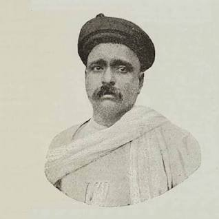

Home Libraries About Us

Lokmanya Tilak
Bal Gangadhar Tilak (pronunciationⓘ; born Keshav Gangadhar Tilak[3][4] (pronunciation: [keʃəʋ ɡəŋɡaːd̪ʱəɾ
ʈiɭək]); 23 July 1856 – 1 August 1920), endeared as Lokmanya (IAST: Lokamānya), was an Indian nationalist,
teacher, and an independence activist. He was one third of the Lal Bal Pal triumvirate.[5] The British colonial
authorities called him "The father of the Indian unrest". He was also conferred with the title of "Lokmanya",
which means "accepted by the people as their leader".[6] Mahatma Gandhi called him "The Maker of Modern
India".[7]
Tilak was one of the first and strongest advocates of Swaraj ('self-rule') and a strong radical in Indian
consciousness. He is known for his quote in Marathi: "Swaraj is my birthright and I shall have it!". He formed a
close alliance with many Indian National Congress leaders including Bipin Chandra Pal, Lala Lajpat Rai,
Aurobindo Ghose, V. O. Chidambaram Pillai and Muhammad Ali Jinnah.
Early life
Tilak's birthplace
Keshav Gangadhar Tilak was born on 23 July 1856 in an Marathi Hindu Chitpavan Brahmin family in Ratnagiri, the
headquarters of the Ratnagiri district of present-day Maharashtra (then Bombay Presidency).[1] His ancestral
village was Chikhali. His father, Gangadhar Tilak was a school teacher and a Sanskrit scholar who died when
Tilak was sixteen. In 1871, Tilak was married to Tapibai (Née Bal) when he was sixteen, a few months before his
father's death. After marriage, her name was changed to Satyabhamabai. He obtained his Bachelor of Arts in first
class in Mathematics from Deccan College of Pune in 1877. He left his M.A. course of study midway to join the
L.L.B course instead, and in 1879 he obtained his L.L.B degree from Government Law College.[8] After graduating,
Tilak started teaching mathematics at a private school in Pune. Later, due to ideological differences with the
colleagues in the new school, he withdrew and became a journalist. Tilak actively participated in public
affairs. He stated: "Religion and practical life are not different. The real spirit is to make the country your
family instead of working only for your own. The step beyond is to serve humanity and the next step is to serve
God."[9]
Inspired by Vishnushastri Chiplunkar, he co-founded the New English school for secondary education in 1880 with
a few of his college friends, including Gopal Ganesh Agarkar, Mahadev Ballal Namjoshi and Vishnushastri
Chiplunkar. Their goal was to improve the quality of education for India's youth. The success of the school led
them to set up the Deccan Education Society in 1884 to create a new system of education that taught young
Indians nationalist ideas through an emphasis on Indian culture.[10] The Society established the Fergusson
College in 1885 for post-secondary studies. Tilak taught mathematics at Fergusson College. In 1890, Tilak left
the Deccan Education Society for more openly political work.[11] He began a mass movement towards independence
by an emphasis on a religious and cultural revival.[12]
Political career
Tilak had a long political career agitating for Indian autonomy from British colonial rule. Before Gandhi, he
was the most widely known Indian political leader. Unlike his fellow Maharashtrian contemporary, Gokhale, Tilak
was considered a radical Nationalist but a Social conservative. He was imprisoned on a number of occasions that
included a long stint at Mandalay. At one stage in his political life he was called "the father of Indian
unrest" by British author Sir Valentine Chirol.[13]
National Congress
Tilak joined the Indian National Congress in 1890.[14] He opposed its moderate attitude, especially towards the
fight for self-government. He was one of the most-eminent radicals at the time.[15] In fact, it was the Swadeshi
movement of 1905–1907 that resulted in the split within the Indian National Congress into the Moderates and the
Extremists.[11]
During late 1896, a bubonic plague spread from Bombay to Pune, and by January 1897, it reached epidemic
proportions. The British Indian Army was brought in to deal with the emergency and strict measures were employed
to curb the plague, including the allowance of forced entry into private houses, the examination of the house's
occupants, evacuation to hospitals and quarantine camps, removing and destroying personal possessions, and
preventing patients from entering or leaving the city. By the end of May, the epidemic was under control. The
measures used to curb the pandemic caused widespread resentment among the Indian public. Tilak took up this
issue by publishing inflammatory articles in his paper Kesari (Kesari was written in Marathi, and "Maratha" was
written in English), quoting the Hindu scripture, the Bhagavad Gita, to say that no blame could be attached to
anyone who killed an oppressor without any thought of reward. Following this, on 22 June 1897, Commissioner Rand
and another British officer, Lt. Ayerst were shot and killed by the Chapekar brothers and their other
associates. According to Barbara and Thomas R. Metcalf, Tilak "almost surely concealed the identities of the
perpetrators".[16] Tilak was charged with incitement to murder and sentenced to 18 months imprisonment. When he
emerged from prison in present-day Mumbai, he was revered as a martyr and a national hero.[17] He adopted a new
slogan coined by his associate Kaka Baptista: "Swaraj (self-rule) is my birthright and I shall have it."[18]
Following the Partition of Bengal, which was a strategy set out by Lord Curzon to weaken the nationalist
movement, Tilak encouraged the Swadeshi movement and the Boycott movement.[19] The movement consisted of the
boycott of foreign goods and also the social boycott of any Indian who used foreign goods. The Swadeshi movement
consisted of the usage of natively produced goods. Once foreign goods were boycotted, there was a gap which had
to be filled by the production of those goods in India itself. Tilak said that the Swadeshi and Boycott
movements are two sides of the same coin.[20]
Tilak opposed the moderate views of Gopal Krishna Gokhale, and was supported by fellow Indian nationalists
Bipin Chandra Pal in Bengal and Lala Lajpat Rai in Punjab. They were referred to as the "Lal-Bal-Pal
triumvirate". In 1907, the annual session of the Congress Party was held at Surat, Gujarat. Trouble broke out
over the selection of the new president of the Congress between the moderate and the radical sections of the
party. The party split into the radicals faction, led by Tilak, Pal and Lajpat Rai, and the moderate faction.
Nationalists like Aurobindo Ghose, V. O. Chidambaram Pillai were Tilak supporters.[15][21]
When asked in Calcutta whether he envisioned a Maratha-type of government for independent India, Tilak answered
that the Maratha-dominated governments of 17th and 18th centuries were outmoded in the 20th century, and he
wanted a genuine federal system for Free India where everyone was an equal partner.[22] He added that only such
a form of government would be able to safeguard India's freedom. He was the first Congress leader to suggest
that Hindi written in the Devanagari script be accepted as the sole national language of India.[23]
Created By Aditya Mohite
All Rights Reserved